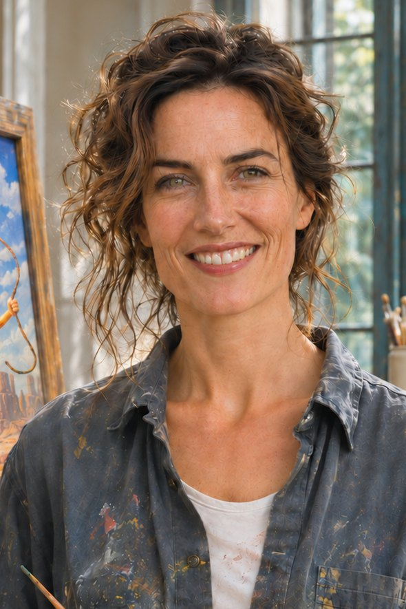

Biography
Candice Shell was born in Ohio in 1978. Her father was a food flavour chemist. She grew up among vials labelled "strawberry flavour" and "vanilla flavour", convinced that everything edible was first invented in a lab.
For fifteen years she was an art director at a Chicago agency specialising in candy and cereal packaging. She reckons she drew some 40,000 smiles there. None of them, she says, was ever allowed to hesitate.
In 2019, a client asked her for the fourth time to make a mascot "happier". She stood up, walked out of the meeting and never came back. Five years followed without her drawing a single smile.
In 2024 she drove across Arizona with no particular destination. She came back with the idea for her first work: Yellow, lost in the desert, cowboy hat on his head, a lasso too short in his hand. She later admitted it was a self-portrait.
Her first series, Environments (2025), throws five mascots into worlds too big for them: desert, forest, city, mountain, ocean. For the first time, characters condemned to smile are allowed to be afraid, to doubt, to get lost.
In 2026, a stay in Kyoto and then Rishikesh led her to the Japanese Godai and the Vedic Pañca Bhūta. The result is Elements, her second series, in which each colour joins a primordial element. She describes the trip herself as "a former American ad exec's spiritual crisis, clichés included".
She now lives in Madrid, in the Lavapiés neighbourhood. She paints in oil on canvas, after dozens of pencil sketches of each character, a habit left over from the mascot model sheets of her old job. Her canvases are signed on the back, then released as limited-edition prints on aluminium. She is represented exclusively by Tonton Gug Studio. People who meet her are surprised: she smiles a lot. "They're the only smiles nobody ordered from me."

Timeline
- 2026Stay in Kyoto, then Rishikesh; Series II, Elements; moves to Madrid
- 2025Series I, Environments, opened by Yellow in the desert
- 2024Drives across Arizona with no destination
- 2019–2024Five years without drawing a single smile
- 2019Walks out of a client meeting and never returns to the agency
- 2004–2019Art director; some 40,000 smiles drawn on packaging
- 1978Born, the daughter of a food flavour chemist
In the studio
Four photographs, four canvases in progress. The finished works differ from what is on the easel.
Desert — Yellow
2025
N° ___ / ___
On the back
Never on the front
Candice Shell signs on the back of every canvas and every print: “cs” in lowercase in a white oval, then the title, the year and the edition number. The front belongs to the image, not to the person who made it.
I sign on the back. I spent my life putting names on the front of things.C. S.
Shown the gallery's wall texts for the first time, she had only one reply.
“If you say so.”